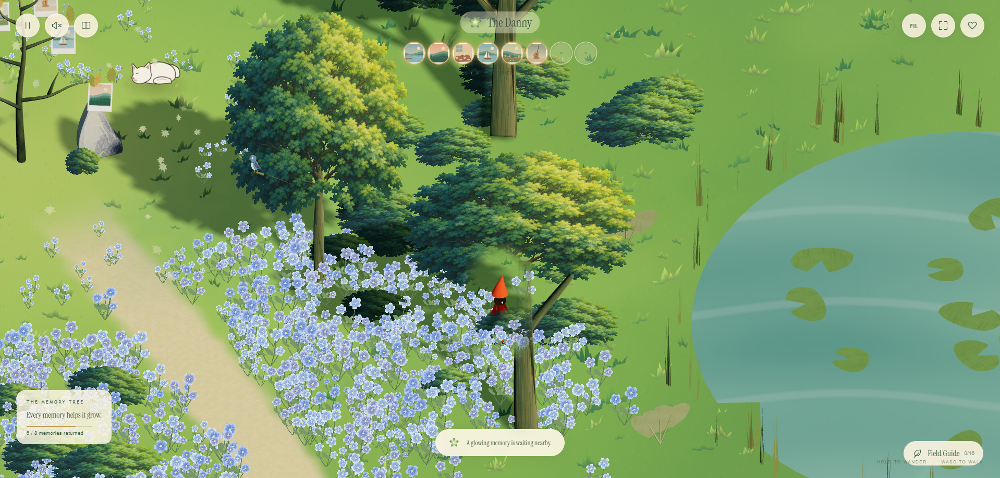
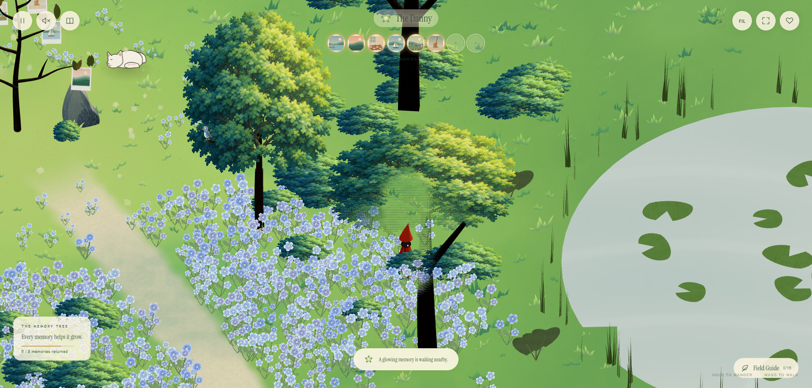
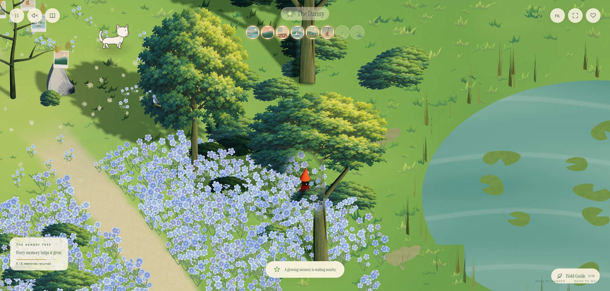
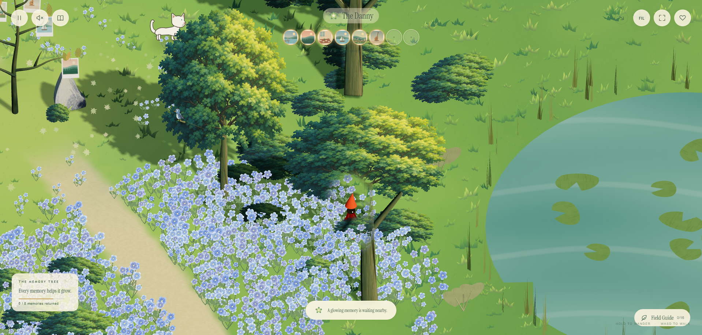

The Danny · development preview
Light through the leaves
Soft foliage fading, warm sunlight, and shadows across the forest.


Shadows stay with the forest.
The leaves and branches fade softly where they overlap the traveler. The tree continues casting its complete shadow as you pass behind it.
Sunlight now reaches the grass and ground, with visible shadows across the sandy path and shaded green pond.
Low, medium & highMoving sun checkedPhone framing checkedFlower and grass contact checked
See each quality setting

